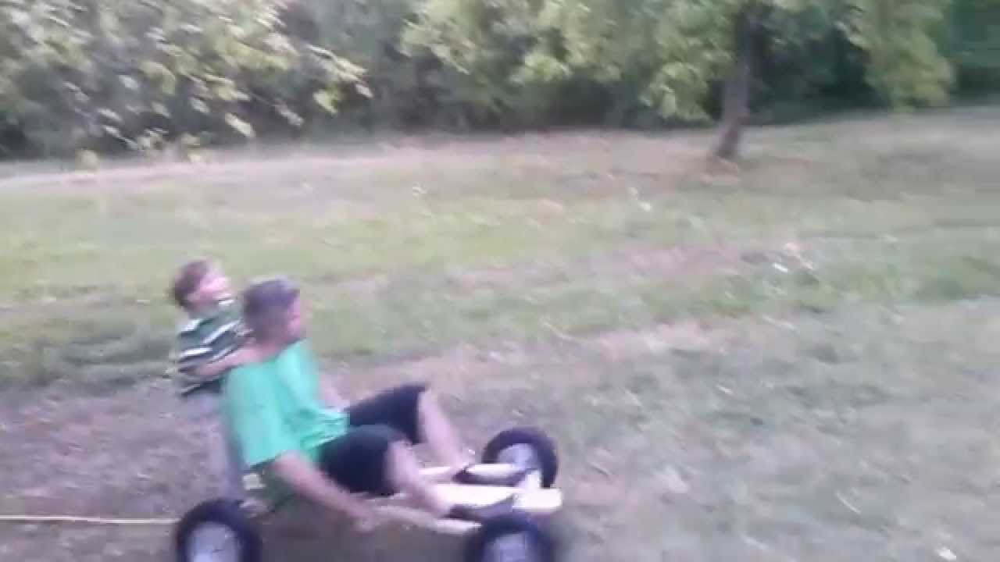
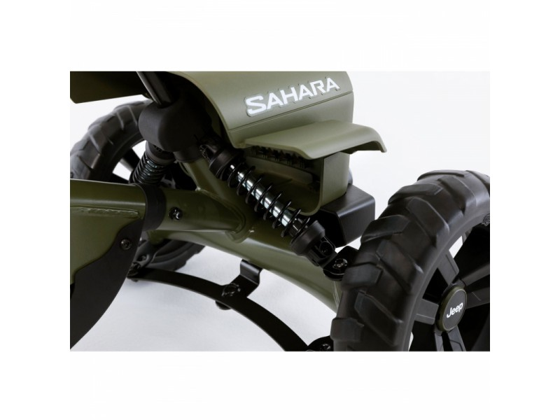

Pasivažinėjimais Kartingais Geram Kartodrome - DovanuSala.lt
 0 Informacija Įsimintos 0 Krepšelis 0 VISOS DOVANOS Poilsis su nakvyne Spa su nakvyne Sveikatinimas ir gydymas Nakvynė su vakariene daugiau Spa ir grožis Masažai Veido ir galvos procedūros Spa procedūros ir ritualai daugiau Gurmaniškos Vakarienės Degustacijos Kulinarijos kursai daugiau Skrydžiai Šuoliai parašiutu Skrydžiai lėktuvu Skrydis oro balionu daugiau Vandens pramogos Vandens parkai, baseinai ir pirtys Nardymas Jachtos ir laivai daugiau Aktyvios ir ekstremalios Jodinėjimas žirgais Šokiai, joga, treniruotės Nuotykių ir batutų parkai daugiau Auto-moto Ekstremalūs pasivažinėjimai Keturračiai ir bagiai Kartingai daugiau Šaudymas Šaudymas koviniais ginklais Šaudymas iš lanko Dažasvydis, lazeriai, šratasvydis daugiau Fotosesijos Asmeninės fotosesijos Romantiškos fotosesijos Šeimos fotosesijos daugiau Kultūrinės Galvosūkių kambariai Ekskursijos Teatro ir kino pramogos daugiau Pamokos ir kursai Menų pamokos Muzika Seminarai ir kursai daugiau Romantiškos Dovanos Jiems Romantiškos fotosesijos Spa procedūros Dviem daugiau KAM? Dovanos moterims Spa ir grožis Poilsis su nakvyne Fotosesijos Gurmaniškos pramogos Pamokos ir kursai Kultūrinės pramogos Jodinėjimas žirgais Vandens pramogos Skrydžiai Dovanos vyrams Aktyvios ir ekstremalios Šaudymo pramogos Skrydžiai Auto-moto pramogos Vandens pramogos Poilsis su nakvyne Spa procedūros Jam Dovanos dviem Poilsis su nakvyne Spa procedūros Dviem Gurmaniškos pramogos Skrydžiai Vandens pramogos Romantiškos fotosesijos Jodinėjimas žirgais Pamokos ir kursai Kultūrinės pramogos Dovanos vaikams Nuotykių ir batutų parkai Kartingai Jodinėjimas žirgais Vandens parkai, baseinai ir pirtys Vaikų fotosesijos Pamokos ir kursai Kultūrinės pramogos Įmonėms Dovanos šeimai Vandens pramogos Poilsis su nakvyne Šeimos fotosesijos Skrydžiai Nuotykių ir batutų parkai Kultūrinės pramogos Gurmaniškos pramogos Aktyvios ir ekstremalios Dovanos senjorams Spa ir grožis Gurmaniškos pramogos Poilsis su nakvyne Kultūrinės pramogos Pamokos ir kursai Fotosesijos Vandens pramogos Skrydžiai Dovanos Jai Dovanos merginai Dovanos draugei Dovanos žmonai Dovanos mamai Dovana sesei Dovana močiutei Dovana kolegei Dovanos nėštukėms Dovanos Jam Dovanos draugui Dovanos vaikinui Dovanos tėčiui Dovanos broliui Dovanos seneliui Dovana kolegai VIETA Regionai Lietuvoje Vilniuje Kaune Klaipėdoje Panevėžyje Šiauliuose Utenoje Marijampolėje Tauragėje Telšiuose Alytuje Kurortai Lietuvoje Druskininkuose Birštone Palangoje Anykščiuose Trakuose Regionai Latvijoje Rygos regionas Vidžemė Kuržemė Latgala Žiemgala Regionai Estijoje Harju apskritis Valgos apskritis Sarės apskritis Raplos apskritis Pernu apskritis Tartu apskritis PROGA Gimtadienio dovanos Jubiliejaus dovanos Vestuvinės dovanos Metinių proga dovanos Dovanos Joninių proga Tėvo dienos dovanos Velykinės dovanos Moters dienos dovanos Valentino dienos dovanos Vyro dienos dovanos Mokytojų dienos dovanos Boso dienos dovanos Mokslų baigimo dovanos Dovanos laisvalaikiui Kalėdinės dovanos Naujametinės dovanos Mamos dienos dovanos Rugsėjo 1 d. dovanos RINKINIAI ČEKIAI NUOLAIDOS TOP NAUJOS Turite dovanų kuponą? | Informacija Nemokamas pakeitimas Grąžinimo garantija Nemokamas pristatymas Pradžia Dovanų kuponai > Auto-moto pramogos > Kartingai
Kartingai
FILTRAS
Kaina nuo 5€ iki 20€ ( 18 ) nuo 20€ iki 50€ ( 11 ) nuo 50€ iki 100€ ( 2 ) Regionas Vilniaus regionas ( 12 ) Kauno regionas ( 7 ) Utenos regionas ( 4 ) Klaipėdos regionas ( 3 ) Panevėžio regionas ( 2 ) Alytaus regionas ( 2 ) Tauragės regionas ( 1 ) Šiaulių regionas ( 1 ) Miestas Vilnius ( 10 ) Kaunas ( 5 ) Anykščiai ( 4 ) Mažeikiai ( 3 ) Klaipėda ( 3 ) Panevėžys ( 2 ) Alytus ( 2 ) Elektrėnai ( 2 ) Smalininkai ( 1 ) Jurbarkas ( 1 ) Šiauliai ( 1 ) Dalyvių skaičius 1 ( 19 ) 2 ( 13 ) 3 ( 2 ) 4 ( 2 ) 5 ( 1 ) Šalis Lietuva ( 25 ) Latvija ( 1 ) Valyti pasirinktus filtrus Rodyti pasiūlymus 24,00 € Galioja 12 mėn.Pasivažinėjimas kartingu 2 asmenims Vilniuje arba Kaune
Nuo 24,00 € Top Kartlandas Vilnius,Kaunas 2 Pasirinkta trukmė Galioja 12 mėn. 12,00 € Galioja 12 mėn.Pasivažinėjimas kartingu „Kartlande“ 1 asmeniui Vilniuje arba Kaune
Nuo 12,00 € Top Kartlandas Vilnius,Kaunas 1 Galioja 12 mėn. 12,00 € Galioja 12 mėn.Pasivažinėjimas kartingu Anykščiuose
12,00 € Motorsportas Anykščiai 1 10 min. Galioja 12 mėn. 16,00 € Galioja 12 mėn.Pasivažinėjimas kartingu 7-9 metų vaikams Vilniuje arba Kaune
16,00 € Kartlandas Vilnius,Kaunas 1 10 min. Galioja 12 mėn. 24,00 € Galioja 12 mėn.Pasivažinėjimas kartingu Anykščiuose (2 asmenims)
24,00 € Motorsportas Anykščiai 2 10 min. Galioja 12 mėn. 14,00 € Galioja 12 mėn.Pasivažinėjimas kartingu Smalininkų kartodrome
Nuo 14,00 € Smalininkų kartodromas Jurbarkas,Smalininkai 1-2 10 min. Galioja 12 mėn. 16,00 € Galioja 12 mėn.Kartingų pradžiamokslis 4-6 metų vaikams Vilniuje arba Kaune
16,00 € Kartlandas Vilnius,Kaunas 1 10 min. Galioja 12 mėn. 15,00 € Galioja 12 mėn.Pasivažinėjimas kartingu „SpeedWay“ kartodrome
15,00 € Speedway Elektrėnai 1 10 min. Galioja 12 mėn. 28,00 € Galioja 12 mėn.Pramogos nuotykių šalyje „Tarzanija“ - BE RIBŲ!
Nuo 28,00 € Tarzanija Alytus 1 5 val. Galioja 12 mėn. 48,00 € Galioja 12 mėn.Pasivažinėjimas kartingu Anykščiuose 4 asmenims
48,00 € Motorsportas Anykščiai 4 10 min. Galioja 12 mėn. 95,00 € Galioja 12 mėn.Kartingų varžybos 5 asmenims
95,00 € Pajūrio kartingai Klaipėda,Mažeikiai 1-5 30 min. Galioja 12 mėn. 12,00 € Galioja 12 mėn.Trumpas pasivažinėjimas kartingu dviem Anykščiuose
12,00 € Motorsportas Anykščiai 2 5 min. Galioja 12 mėn. 9,00 € Galioja 12 mėn.Pasivažinėjimas drift kartais nuotykių šalyje „Tarzanija“
Nuo 9,00 € Tarzanija Alytus 1-3 10 min. Galioja 12 mėn. 20,00 € Galioja 12 mėn.Pasivažinėjimas kartingu „TopKart“ Šiauliuose
20,00 € Top Kartai Šiauliai 1-2 10 min. Galioja 12 mėn. 20,00 € Galioja 12 mėn.Pasivažinėjimas kartingais 2 asmenims
Nuo 20,00 € Pajūrio kartingai Klaipėda,Mažeikiai 2 Galioja 12 mėn. 10,00 € Galioja 12 mėn.Pasivažinėjimas kartingais kartodrome Panevėžyje
10,00 € AJ Racing Panevėžys 1 10 min. Galioja 12 mėn. 18,00 € 20,00 € -10% Galioja 12 mėn.Pasivažinėjimas kartingais kartodrome 1-2 asmenims Panevėžyje
18,00 € 20,00 € -10% Nuolaida AJ Racing Panevėžys 1-2 1 važiavimas 20 min. arba 2... Galioja 12 mėn. 12,00 € Galioja 12 mėn.Pasivažinėjimas elektriniu kartingu Vilniuje
12,00 € Epower arena Vilnius 1 10 min. Galioja 12 mėn. 24,00 € Galioja 12 mėn.Pasivažinėjimas elektriniu kartingu 1-2 asmenims Vilniuje
24,00 € Epower arena Vilnius 1-2 1 važavimas 20 min. arba 2... Galioja 12 mėn. 10,00 € Galioja 12 mėn.Pasivažinėjimas elektriniu kartingu vaikui Vilniuje
10,00 € Epower arena Vilnius 1 10 min. Galioja 12 mėn. 20,00 € Galioja 12 mėn.Pasivažinėjimas elektriniu kartingu 1-2 vaikams Vilniuje
20,00 € Epower arena Vilnius 1-2 1 važiavimas 20 min. arba 2... Galioja 12 mėn. 24,00 € Galioja 12 mėn.Pasivažinėjimas elektriniu motociklu ir elektriniu kartingu Vilniuje
24,00 € Epower arena Vilnius 1 20 min. Galioja 12 mėn. 16,00 € Galioja 12 mėn.Pasivažinėjimas dviviečiu kartingu kartodrome Vilniuje
Nuo 16,00 € Kartlandas Vilnius,Kaunas 2 Galioja 12 mėn. 27,00 € Galioja 12 mėn.Pasivažinėjimas kartingu dviem „SpeedWay“ kartodrome
27,00 € Speedway Elektrėnai 2 10 min. Galioja 12 mėn. 18,00 € Galioja 12 mėn.Pasivažinėjimas kartingu 1 asmeniui
Nuo 18,00 € Pajūrio kartingai Klaipėda,Mažeikiai 1 Galioja 12 mėn. 14,00 € Galioja 12 mėn.Pasivažinėjimas kartingu Rygoje
14,00 € Kartinga Nams XL Riga Ryga 1 10 min. Galioja 12 mėn.Ar norite pajusti greitį ir adrenaliną? Kartingai – tai puiki galimybė pralenkti savo varžovus, skrieti didelių greičiu per trasą ir įveikti paruoštas kliūtis. Jūs tik apie tai ir svajojate? Vadinasi kartingai, kurie yra „Kartingų dovanos“ kategorijoje kaip tik jums. Siūlome pasivažinėjimą kartingu vienam ar draugų kompanijoje bei pasivažinėjimą elektriniu kartingu daugelyje Lietuvos miestų bei Latvijoje. Ką vertėtų žinoti prieš išbandant šią pramogą:
Trasa. Kiekvienas kartodromas paruošia pašėlusią beveik kilometrą siekiančią trasą kurioje galėsite išbandyti save bei mesti iššūkį savo draugams! Kartodrome galite išsinuomoti visą trasą ir ten surengti varžytuves, o po jų apdovanoti laimėjusiuosius taurėmis ir medaliais. Svečiai tokios pramogos nepamirš niekada!
Apranga . Nepamirškite, svarbiausia dėvėti patogius drabužius, kad pramogos malonumo neužtemdytų nereikšmingos smulkmenos.
Apribojimai . Būtina atkreipti dėmesį, kad kai kuriuose kartodromuose yra tam tikras ūgio kriterijus. Įprastai kartingu naudotis negali žemesni nei 130 centimetrų ūgio asmenys.
Abonimentas . Jeigu ieškote unikalios dovanos savo artimiausiam žmogui, padovanokite metinį kartodromo abonementą. Jūsų antroji pusė ar geriausias draugas džiaugsis neišsenkančia adrenalino doze ištisus metus.
Elektriniai kartingai. Nuo šiol galite išbandyti ir elektrinius kartingus, kurie Lietuvoje dar pakankama naujiena. Važiuodami elektriniais kartingais galėsite pasiekti net 70km/h greitį. Puikiausia žinia, kad elektriniais kartingais galėsite važinėti visus metus, kadangi jų trasa įrengta uždaroje patalpoje.
Pasivažinėjimas kartingais – tai puiki galimybė nuotaikingai praleisti laiką, pasisemti gerų emocijų ir drenalino. Dovana Kartingai yra smagi pramoga tiek leisti laiką vienumoje, tiek šėlti draugų kompanijoje. Pasirinkę šią pramogą kartu su draugais, galėsite visi kartu važytis trasoje, lenktyniauti ir laisvalaikį praleisti iš ties originaliai. Kartingas yra saugus, greitas ir lengvai valdomas, todėl jame jausis patogiai net ir nei karto jais nevažiavę. Dovanų kuponas Kartingai yra ideali dovana tiems, kurie dievina greitį bei pramogas suteikiančias ekstremalius pojūčius.
Informacija Pristatymas Garantijos Apie mus Kontaktai D.U.K. perkančiam dovaną Nuolaidos ir lojalumas Mūsų parduotuvės UAB Baltic commerce +370 633 42244 info@dovanusala.lt 9.4/10 Iš 10420 lankytojų įvertinimų Informuojame, kad šioje svetainėje naudojami slapukai. Sutikdami, paspauskite mygtuką SUTINKU. Daugiau informacijos – slapukų politikoje Sutinku © 2011-2020